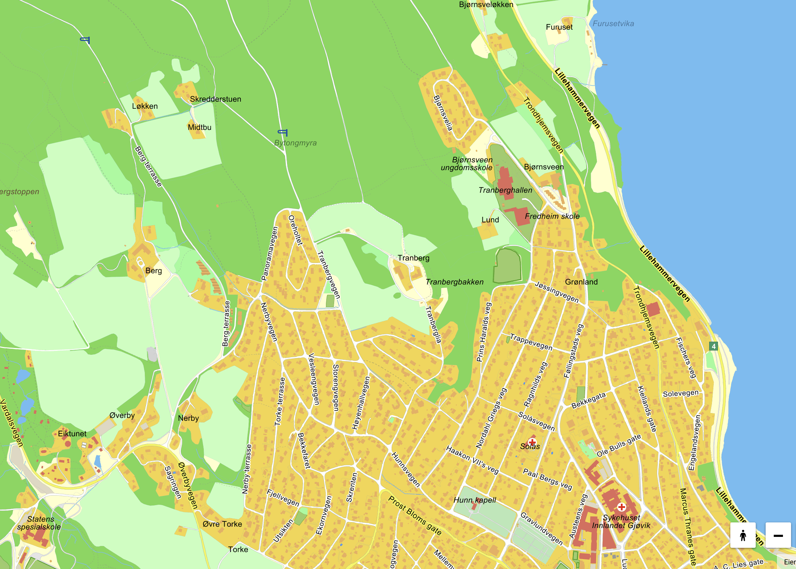

Klar for en dag med spenning og samarbeid? I dag skal dere ut på eventyr!
Følg instruksjonene for å gå til hver post. Løs oppgaven der for å finne 10 hemmelige kodeord. Denne appen hjelper dere med å holde styr på fremdriften og sjekke svarene.
Bruk kartet om dere trenger det. Lykke til!
Først, finn veien til Skateparken.
Der venter Ståle. Få et oppropsark og penn av ham.
Oppdrag: Få ti ulike personer til å skrive under på et opprop for rosa skoleuniformer på BUS.
Når dere har 10 underskrifter, gå tilbake til Ståle. Han vil gi dere kodeordet til neste oppgave.
Neste stopp er Mjøspromenaden (Strandpromenaden).
Finn Mari på promenaden. Hun har gjemt unna det neste kodeordet. Spør henne pent!
Gå nå til Skibladner-kaia.
Tenk nøye: Hvis du deler meg, har du meg ikke lenger. Hva er jeg?
Finn frem til Gjøvik kulturhus.
Spill av lydfilen under for å få neste ledetråd. Hvilken bokstav er det snakk om?
Turen går videre til Gjøvik kirke.
Tenk på et tresifret tall: Tiersifferet er 5 større enn enersifferet. Hundrersifferet er 8 mindre enn tiersifferet. Hvilket tall er det?
Sett kursen mot Vitensenteret Innlandet.
Når dere er fremme: Jeg tenker på et tall. Ganger jeg det med 3 og legger til 6, får jeg 21. Hvilket tall tenker jeg på?
Neste mål er Kauffeldtgården.
Finn det engelske ordet som starter med T, slutter med T, og har T (tea) inni seg.
Gå til Gjøvik Gård.
Hvilket engelsk oddetall blir et partall (even) hvis du fjerner én bokstav?
Finn veien opp til Eiktunet.
Hva får du (på engelsk) hvis du krysser en snømann med en vampyr?
Siste etappe går til Strandparken.
Tenk over dette: Jo mer du tar, desto flere etterlater du. Hva er jeg?
Dere har vist supert samarbeid og skarpe hjerner! 🧠💡
Nå er rebusløpet fullført! Gå til samlingspunktet som lærerne har bestemt for en velfortjent avslutning!
Bruk dette kartet for å finne frem til postene.
(Trykk på 'Rebus'-fanen for å gå tilbake til oppgavene)